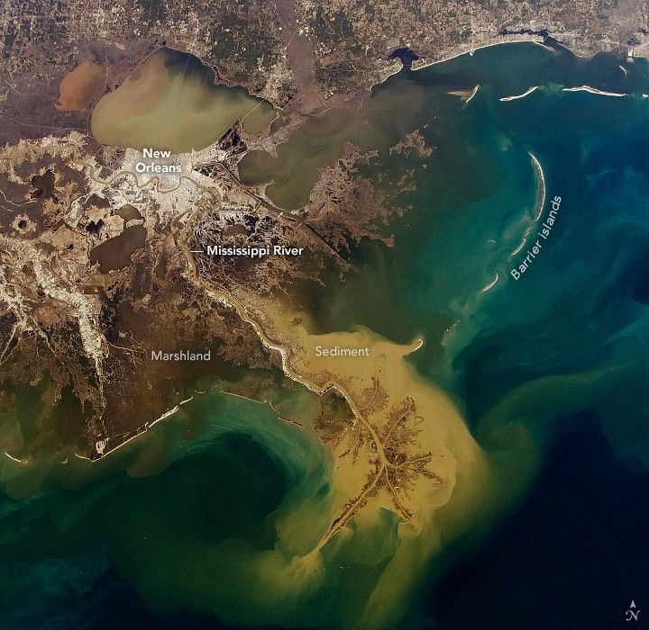

Winter Transforms the Mississippi River Delta
An astronaut aboard the International Space Station captured this photo of the Mississippi River Delta. The river enters the frame from the upper left and winds its way through New Orleans, Louisiana, before fanning out into the delta.
The delta branches from the river’s mouth into distributary channels, forming the distinctive bird’s foot shape of the Mississippi River Delta Basin (Plaquemines-Balize Delta), before emptying into the Gulf of Mexico. Light-tan plumes of sediment-laden water extend from the delta, gradually blending into shades of blue as ocean currents disperse the sediments. Between the mainland and the delta’s foot, dark brown-green colors indicate areas of marshland and peat formation. Along the coast, barrier islands—sandbars formed by the receding river delta lobes—are visible, shaped over time by longshore currents and waves.
A major Gulf Coast storm affected the area between January 20–22, 2025. Snow, uncommon in this region, still blanketed much of the landscape on January 24, though most had melted by the afternoon when this photo was taken. The large plume of sediments surrounding the delta was likely influenced by a brief increase in the Mississippi River’s outflow due to the melting snow.
Originating from Lake Itasca, Minnesota, the Mississippi River flows approximately 3,770 kilometers (2,340 miles) through 10 states before emptying into the Gulf. Under natural, unconstrained conditions, a bird’s foot delta is a dynamic landscape where new land grows, channels migrate, and water inundates some areas. The delta’s shape depends on sediment supplied by the river, but human intervention, rising sea levels, and ongoing erosion strongly influence its modern evolution.
The Mississippi River’s watershed drains 41 percent of the United States (all or part of 31 states) and reaches into two Canadian provinces. Its nutrient-rich waters support fertile agricultural lands along the shores and throughout the deltaic basin. The river also supports the U.S. economy by providing transportation shipping routes. To maintain these functions, engineers have implemented channelization to maintain navigable shipping lanes and, in recent decades, sediment diversion projects to return vital sediments to wetlands.
Flooding from storms and rising sea levels in the low-lying areas around the delta has prompted flood control measures over the past 200 years, including levees, dams, and floodwalls. Because the Mississippi River and its delta remain active geologic forces that reshape the landscape, ongoing modifications are necessary to maintain a navigable passageway.